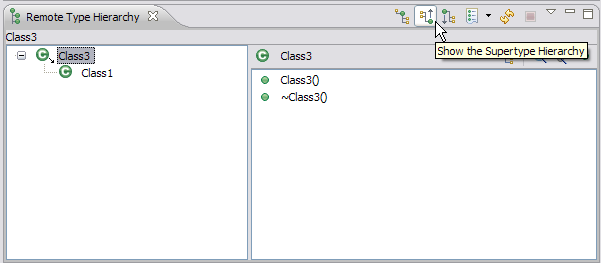
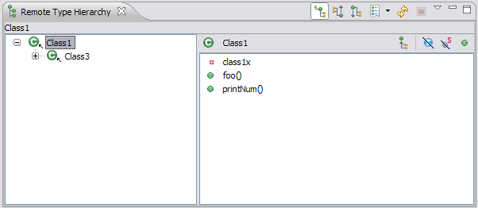
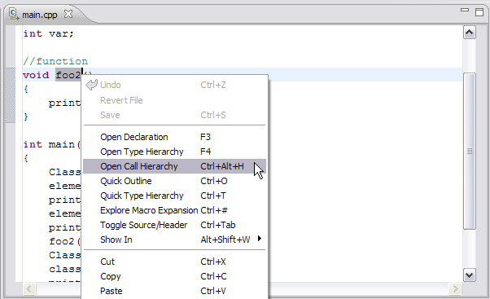

Analysis of remote code
Once you have coded your program, you can use the Remote Type Hierarchy and Remote Call Hierarchy views
to view classes and members, functions and their relationships in a variety of different ways
To use the Remote Type Hierarchy view:
- In the Project Explorer view, expand your project. Select your source file
and open it in the remote C/C++ editor.

- Select the element name in the editor. Right-click and select Open Type Hierarchy.

- The Remote Type Hierarchy view opens up and shows the element's hierarchy.

- Click the Show the Supertype Hierarchy button to see a hierarchy showing the type's parent
elements. This view shows the results of going up the type hierarchy.

- Click the Show the Subtype Hierarchy button.

- Click the Show the Subtype Hierarchy button.
- In the hierarchy tree pane, select any element, right-click and select Focus On.
The selected element and its hierarchy is presented in the hierarchy view.


To use the Remote Call Hierarchy view:
- In the Project Explorer view, expand your project. Select your source file
and open it in the remote C/C++ editor.

- Select the function name in the editor. Right-click and select Open Call Hierarchy.

- The Remote Call Hierarchy view opens up and shows the function's callers.

- To get the callees of the function. Click the Show Callees button.

Related tasks
Analyze code
Related reference
Remote Type Hierarchy view
Remote Call Hierarchy view